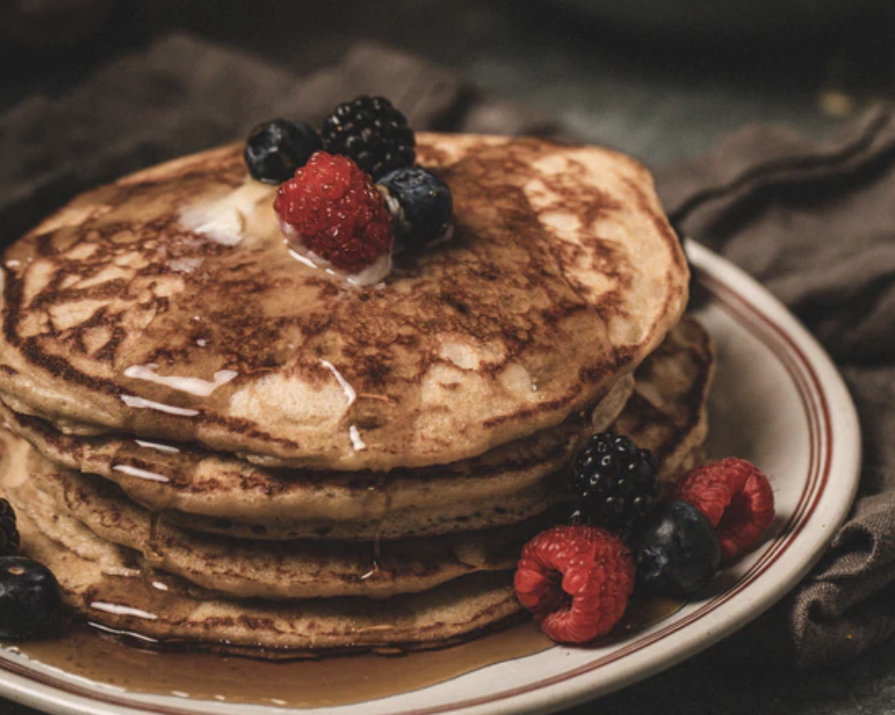

Overnight Sourdough Flapjacks

Mmmm...Taking Flapjacks up a level
Just when we thought we had flapjacks figured out, we tried our hands at sourdough flapjacks and we think you'll want to too! This batter is made overnight, but this delicious flavor and fluffy texture will have you jumping out of bed in the morning to get cooking.
Ingredients
- 2 cups Kodiak Buttermilk Power Cakes Flapjack & Waffle Mix
- 2 teaspoons active dry yeast
- 2 eggs
- 1-1/2 to 2 cups warm milk
- 2 tablespoons butter, melted
- 2 teaspoons honey (optional)
- 2 teaspoons vanilla extract (optional)
Instructions
- Mix the Kodiak mix and yeast together
- Add the eggs, 1-1/2 cups milk, melted butter, and optional vanilla extract or optional honey
- Cover the batter and place in the fridge overnight
- In the morning, gently stir the batter (be careful not to over mix)
- If batter is too thick, stir in the remaining 1/2 cup milk
- Heat a pan or griddle to 375°F or medium-high heat
- Pour 1/4 cup sized flapjacks on the greased griddle and cook until bubbles form on the top
- Flip and continue cooking until golden brown
- Enjoy
Return to main page